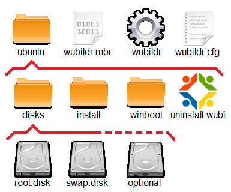

Konfiguration
Dieser Artikel wurde für die folgenden Ubuntu-Versionen getestet:
Ubuntu 14.04 Trusty Tahr
Zum Verständnis dieses Artikels sind folgende Seiten hilfreich:
 Um Wubi
Um Wubi  seinen Bedürfnissen anzupassen, werden in der folgenden Beschreibung (als Unterartikel vom Leitartikel) auf die Arbeitsweise des Bootloader, auf einsetzbare GRUB_2 Anwendungen und weitere Einstellungen dieser Installation unter Windows eingegangen.
seinen Bedürfnissen anzupassen, werden in der folgenden Beschreibung (als Unterartikel vom Leitartikel) auf die Arbeitsweise des Bootloader, auf einsetzbare GRUB_2 Anwendungen und weitere Einstellungen dieser Installation unter Windows eingegangen.
Hinweis:
Ubuntu kann als Wubi-Installation nicht auf einem GPT-Datenträger eingesetzt werden. Auch darf das Windows nicht im UEFI-Modus installiert sein.
Arbeitsweise Bootloader¶
|  |
| Verzeichnisstruktur Wubi-Installation |
Auf der Installations-Partition ist das Verzeichnis ubuntu mit drei Unterverzeichnissen und mehreren Dateien in verschiedenen Ebenen abgelegt. Die Datei wubildr muss auf der gleichen Partition wie das Verzeichnis ubuntu abgelegt sein (C:\ , D:\ usw.), damit das Zusammenspiel zwischen Windows und Ubuntu bei Updates sichergestellt ist.
Nach der Auswahl von "Ubuntu" im Windows-Boot-Menü wird die Datei wubildr.mbr aufgerufen, die bis Windows XP auf der Root-Partition von Windows liegen muss, ab VISTA kann der Pfad zu dieser Datei im Bootmanager bestimmt werden. Diese Datei sucht nacheinander auf allen primären Windows-Partitionen (jeweils oberste Ebene - also z.B. C:\ , nicht jedoch in einer erweiterten Partition) nach der Datei wubildr, die alle notwendigen Startdateien für den GRUB-Bootloader beinhaltet.
Zusammen mit den Konfigurationsdaten aus der Datei wubildr.cfg wird dann die Datei root.disk eingebunden, die Datei grub.cfg darin gesucht, welche zur Aufbereitung des normalen Grub-Menü benutzt wird.
Der nachfolgende Ablauf ist, einmal von der speziellen Einbindung der Datei root.disk abgesehen, fast identisch mit einer normalen Ubuntu-Installation.
Damit dieser so ablaufen kann, wird zusätzlich zu einer normalen Ubuntu-Installation das Paket lupin-support eingebracht, das im Wesentlichen im Verzeichnis /etc/grub.d zusätzlich das Skript 10_lupin einbringt, das anstelle von 10_linux benutzt wird. Dazu werden weitere Skripte und bin-Dateien als Werkzeug für eine loop-Anbindung bereit gestellt. Die Beschreibungen unter GRUB 2 sind nicht anwendbar bzw. nur sehr bedingt vergleichbar! Es fehlen wesentliche Funktionen, die unter Windows eben nicht realisierbar sind.
GRUB_2-Anwendungen¶
Erweiterungen hinsichtlich GRUB 2-Funktionalität sind vom Konzept her nicht vorgesehen. Eine WUBI-Installation soll in der Regel so benutzt werden, wie diese sich nach der Installation darstellt.
Die Erweiterung der WUBI-Installation um bestimmte Funktionen ist möglich, sollten aber mit Bedacht vorgenommen werden, da nach einem Update der WUBI relevanten Pakete es zu einem nicht kontrollierbarem Zustand der Installation kommen kann.
Eine Sammlung von ausgetesteten "Erweiterungen" ist unter Wubi/Erweiterungen zu finden.
Ubuntu updaten¶
Ein Update wird wie bei einer regulären Installation ausgeführt - dies gilt sowohl für die laufenden Updates einzelner Pakete innerhalb einer Version, als auch ein Versions-Upgrade. Es sind die gleichen Voreinstellungen im Paketmanager zu setzen.
Update GRUB_2 Bootloader¶
Ein Update der Pakete von GRUB 2 macht intern keine Probleme und funktioniert wie ein normales Paket-Update, entweder via Paketmanagement [1] oder durch Herunterladen der relevanten Pakete und Einbringen mittels Paket-Installation [1]. Man muss dabei nur darauf achten, dass kein Master Boot Record (MBR) gesetzt wird bzw. als Laufwerk -> /dev/sdaY ausgewählt wird.
Fehler beim Update¶
Die Datei wubildr wird bei jeder Veränderung, die ein update-grub bzw. grub-install erfordert, mit angepasst. Kommt es dabei zu Abweichungen zwischen inneren und äußeren Bedingungen, kann es passieren, dass ein Start nicht mehr möglich ist. Abhilfe schaffen dann nur folgende Maßnahmen (Reihenfolge nach Schwere des Fehlers):
manueller Austausch der Dateien aus dem Backup an den vorgegebenen Positionen innerhalb der Windows-Installation.
Das System starten wie unter Problembehebung beschrieben.
Alternativ kann man die für die relevante Version richtige Datei sich wie folgt besorgen:
Datei wubi.exe aus einem versionsrelevanten Ubuntu-Archiv herunterladen
Auf einem Windows-Rechner ohne Wubi wubi.exe starten
Sobald der Download beginnt den Vorgang abbrechen
Datei aus dem Verzeichnis \ubuntu\winboot kopieren
Sonstige Hinweise¶
Wubi - Aber sicher¶
Mit der folgend beschriebenen Methode lassen sich Schritte einleiten, die der Sicherheit dienen bzw. helfen, das Wubi-System zu verstecken.
Wubi-Dateien verstecken¶
Man kann alle Wubi-Dateien so verstecken, dass diese auch mit der Windows-Option:
"Ordneroptionen" -> "Reiter Ansicht" -> "Alle Dateien und Ordner anzeigen"
nicht zu sehen sind. Dazu die Eingabeaufforderung mit der  -Taste als Administrator aufrufen und nach dem Wechsel in das Verzeichnis der Wubi-Dateien diese mit den Windows Attributen für
-Taste als Administrator aufrufen und nach dem Wechsel in das Verzeichnis der Wubi-Dateien diese mit den Windows Attributen für
s = Systemdatei
h = hidden (versteckt)
r = readable only (nur lesbar)
versehen. Die Eingabe im Windowsterminal ist beispielhaft für die root.disk:
C:\ubuntu\disks>attrib +s +h +r root.disk_
Das Arbeiten unter Ubuntu wird dadurch nicht eingeschränkt.
Start vom USB-Stick¶
Wenn man den Wubi-Rechner von einem USB-Stick starten möchte und um für alle Fälle gerüstet zu sein, sollte man sich einen USB-Stick (ca. 4 GB) mit einer Ubuntu-Minimalinstallation bzw. einer Server-Installation anlegen. Dieser Stick ist nützlich, um u.a. in das Wubi-System zu wechseln, falls dieses nicht mehr starten will - siehe auch Reparatur am System.
Außerdem bietet dieser USB-Stick nach kleinen Ergänzungen am GRUB 2-Bootloader die Möglichkeit, das Wubi-System direkt zu starten, ohne den Windows-Bootmanager bzw. die C:\boot.ini zu benutzen:
Skripte zum Fremdstarten¶
Die folgende Beschreibung bezieht sich auf Arbeiten an Dateien des USB-Sticks. Man startet diesen und erstellt die Datei
/etc/grub.d/39_custom
mit folgendem inhalt:
1 2 3 4 5 | cat <<EOF if [ -f /boot/grub/custom.cfg ]; then source /boot/grub/custom.cfg; fi EOF |
Damit dieser USB-Stick jetzt nur dort einen Menüpunkt anzeigt, wo auch eine Wubi-Installation vorhanden ist, wird noch die Datei
custom.cfg erstellt:
1 2 3 4 5 6 7 8 9 10 11 12 13 14 15 16 17 18 19 | insmod ntfs insmod part_msdos wubi= search -f -n --set=wubi /ubuntu/disks/root.disk if [ $wubi ]; then menuentry '======================================' { set quiet=1 reboot } menuentry 'Wubi suchen und starten' { search -s -f -n /ubuntu/disks/root.disk probe --set=diskuuid -u $root if loopback loop1 /ubuntu/disks/root.disk; then set root='(loop1)' linux /vmlinuz root=UUID=$diskuuid loop=/ubuntu/disks/root.disk ro quiet splash initrd /initrd.img fi } fi |
und in das Verzeichnis /boot/grub/ abgelegt. Alternativ kann man auch die Zeilen 15 + 16 ersetzen durch
1 | configfile /boot/grub/grub.cfg |
und erhält danach dann das Bootmenü aus der Wubi-Installation. Eine weitere interessante Variante ist die Zeilen 11 bis 17 durch
1 2 | search -s -f -n /ubuntu/winboot/wubildr.cfg configfile /ubuntu/winboot/wubildr.cfg |
zu ersetzen. Damit wird nicht nur das Bootmenü aus der Wubi-Installation gestartet, sondern es kann auch der erste Start zur Fertigstellung einer Wubi-Installation so ausgeführt werden.
Mit einem
sudo update-grub
werden die Änderungen abgeschlossen. Die Systemdaten von der Wubi-Basis (Windowsrechner) wie z.B.:
insmod-DateienTitel für
menuentrydie
UUIDunddie Kerneloptionen
sind entsprechend anzupassen. Nach dem Start des USB-Stick und Auswahl der Wubi-Installation wird diese direkt oder der interne Bootloader aufgerufen.
Dateien reduzieren¶
Achtung!
Vor einer Verschiebung der Wubi-Dateien sollte man eine Datensicherung durchführen. Die Eintragungen in der /etc/fstab vom Wubi Ubuntu müssen zeitgleich an den veränderten Verzeichnisbaum angepasst werden.
Mit den obigen Maßnahmen kann man sowohl auf einen Eintrag im Windows-Bootmanager bzw. in der C:\boot.ini und auch auf die drei Dateien wubildr* ganz verzichten (siehe Arbeitsweise Bootloader). Durch die Reduzierung auf die Dateien
root.disk
swap.disk
und Anpassung des Speicherortes dafür (z.B. verschieben nach C:\Programme\Backup) lässt sich das Vorhandensein dieser Installation weiter verschleiern und damit Fremdzugriffe erschweren.
Optionale Laufwerke¶
Will man zu den bei der Installation von Wubi als Standard angelegten beiden virtuellen Laufwerken noch zusätzliche Laufwerke einrichten, z.B. um ein getrenntes Homeverzeichnis zu erhalten, so sind die folgenden Schritte erforderlich:
Man öffnet ein Terminal [2] und wechselt in das Verzeichnis zu den anderen virtuellen Laufwerken und gibt dort zur Erstellung eines Homeverzeichnisses nacheinander ein (die Bezeichnung home.disk ist beispielhaft):
cd /host/ubuntu/disks sudo dd if=/dev/zero of=home.disk bs=1024 count=1024x5120 sudo mkfs.ext4 -i 1024 -b 1024 -m 5 -F -v home.disk
Siehe dazu auch Shell/dd und Formatieren, der Wert für count= ergibt die Größe des virtuellen Laufwerkes - hier ca. 5 GB. Dazu muss dieses virtuelle Laufwerk noch in der /etc/fstab eingetragen werden mit:
1 | /host/ubuntu/disks/home.disk /home ext4 loop,defaults 0 2 |
Nachdem man zuvor die Daten aus dem Verzeichnis /home in dieses neue Laufwerk übertragen hatte, kann das Laufwerk benutzt werden. Das Löschen der alten Daten unter /home sollte erst nach einer Testphase ausgeführt werden.
Links¶
Wubi
 Übersichtsartikel
ÜbersichtsartikelWubi/Problembehebung Hinweise zum "Testen" und "Reparieren" von Wubi
Wubi/Erweiterungen - Grub_2-Funktionalität unter Wubi einbringen
Wubi/Migration Wie man sein Wubi auf eine eigene Partition verschiebt
Informationen¶
Wubi Guide Der Wubi-Artikel im Ubuntu-WIKI
Wer hat Angst vorm Pinguin?
 - Artikel über Wubi aus LinuxUser 01/2008
- Artikel über Wubi aus LinuxUser 01/2008Starten.mit-Linux.de
- Deutsche Wubi-Installer-Seite
- Erstellt mit Inyoka
-
 2004 – 2017 ubuntuusers.de • Einige Rechte vorbehalten
2004 – 2017 ubuntuusers.de • Einige Rechte vorbehalten
Lizenz • Kontakt • Datenschutz • Impressum • Serverstatus -
Serverhousing gespendet von